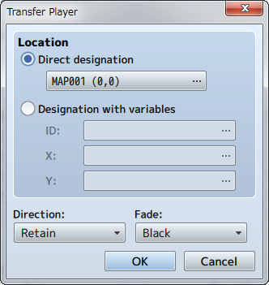
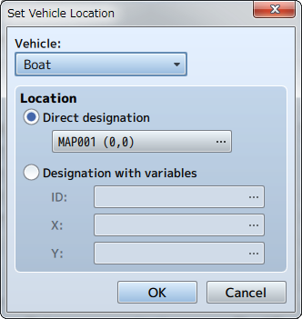
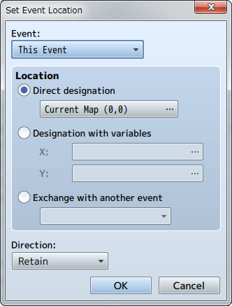
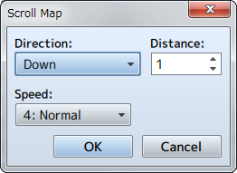

Movement
Transfer Player

Function
Changes the location of the party.
Settings
- Location
- Specify the location after changing it. To move a party to a specific location, select [Direct designation], and click to specify the location to move the party in the window that is displayed when you click [...]. To specify the location using a map ID and coordinates, select [Designation with variables], and specify the variables to reference in [ID], [X], [Y].
- Direction
- Specify the direction of the player after being transferred.
- Fade
- Specify how the screen will transition during a transfer. The screen will be displayed in black when choosing [Black] and [White] when choosing white, followed by displaying the new map location.
Set Vehicle Location

Function
Changes the location of vehicles.
Settings
- Vehicle
- Specify the target vehicle (boat/ship/plane).
- Location
- Specify the location after changing the location. To move a vehicle to a specific location, select [Direct designation], and click to specify the location to move the vehicle in the window that is displayed when you click [...]. To specify the location using a map ID and coordinates, select [Designation with variables], and specify the variables to reference in [ID], [X], [Y].
Set Event Location

Function
Changes the location of an event.
Settings
- Events
- Specify the target event. By setting this to [This Event], the event itself will be the target for changing the location. Moving the event is limited to the same map.
- Location
- Specify the location after changing the location. To move an event to a specific location, select [Direct designation], and click to specify the location to move the event in the window that is displayed when you click [...]. To specify the location using a map ID and coordinates, select [Designation with variables], and specify the variables to reference in [ID], [X], [Y].
- Direction
- Specify the direction of the event after being moved.
Remarks
- This cannot be used in battle events.
Scroll Map

Function
Moves (scrolls) the range of the map displayed while playing without changing the location of the player.
Settings
- Direction
- Specify the direction to scroll.
- Distance
- Specify the distance (number of tiles) to move.
- Speed
- Specify the speed (6 levels) of the scrolling.
Remarks
- This cannot be used in battle events.
Set Movement Route
Function
Forces the player or map event to move along a specified route.
For more information please refer to [Set Movement Route].
Remarks
- Characters set on a movement route will start to move immediately.
- Using this event command on characters which are already set on movement routes will cause those settings to be abandoned, and only the new settings will be active. Choose [Wait for Completion] when wanting to set the next route after the movement from a previous route is completed.
- When [Wait for Completion] is enabled, the player cannot perform any actions until the movement command has finished (excluding processes running in parallel). If the character on the specified movement route runs into any obstacles during this time and the movement command is no longer able to run, the event will stop at that point. Enable options such as [Skip If Cannot Move] to avoid these sort of situations.
- The player's total number of steps will not be added using this event command even if they move.
- This cannot be used in battle events.
Get on/off Vehicle
Function
Controls getting on and off vehicles. The player will get off onto the ground when on the vehicle, and get on the vehicle when not on it. There are no parameters to set.
Remarks
- This event forces the player to get on or off the vehicle just as when they use the [Action] key. Nothing will happen if there are no vehicles available that can normally be ridden (when there are no vehicles that can be boarded and when there is no ground to move to).
- This cannot be used in battle events.